Mr. & Mrs. Liu (55 and 53, Taipei) just sold their tech business and have €1.5M (~NT$50M) in cash. Originally targeted Portugal D7, which is now heavily restricted. Now exploring alternatives — they want a 5-year path to EU residency that may convert to citizenship, plus a holiday/retirement base in Europe. They've never used Property Monitor. This walkthrough shows them which page to open first, what to click, what each screen means, and where the site's honest limits are — using the Lius' questions as the lens. It is not investment advice, immigration advice, tax advice, or a country-selection recommendation. 劉先生夫婦，55 歲與 53 歲，台北，剛出售科技公司，手握 €150 萬（約台幣 5,000 萬）現金。原先鎖定葡萄牙 D7，但現已大幅限縮。目前探索替代路徑 — 他們想要 5 年 EU 居留＋最終換護照，以及一個歐洲度假／退休基地。他們從沒用過 Property Monitor。這份導覽用劉氏夫婦的問題當主軸，告訴你先打開哪一頁、點哪裡、每個畫面代表什麼、以及網站的誠實限制在哪。本文不是投資建議、移民建議、稅務建議或國家選擇推薦。
- Where on the site can I compare EU Golden Visa programs side-by-side?這個網站哪裡可以並排比較 EU 黃金簽證計畫？
- Which EU country does this site actually have full market data on?這個網站對哪個歐盟國家有完整市場數據？
- Where is the long-form Ireland market thesis — before I start clicking charts?在我開始點圖之前，愛爾蘭的長篇市場報告在哪？
- What does €1.5M actually cost end-to-end as a foreign buyer in Ireland?身為外國買家，€150 萬在愛爾蘭的實際全程總成本是多少？
- Does the site cover Portugal / Greece / Cyprus / Malta in detail? (Honest answer + workaround)網站對葡萄牙、希臘、塞普勒斯、馬爾他有詳細數據嗎？（誠實回答＋替代方案）
- How do Ireland REITs compare to direct property for an EU residency strategy?對於歐盟居留策略，愛爾蘭 REIT 與直接買房哪個更好？
- How do I switch the site to 中文? Where do I download a PDF for our migration lawyer?怎麼切到中文？怎麼下載 PDF 給我們的移民律師？
The Lius' click-by-click tour — 12 stops劉氏夫婦的逐步點擊旅程 — 12 個停靠點
Each stop is a real page on the site. For each, you'll see what they click, what the screen shows, and how that screen relates to their Golden Visa situation. Follow along in another tab — every URL works. 每個停靠點都是站上的一頁實際畫面。每站告訴你他們點什麼、螢幕出現什麼、這個畫面跟他們黃金簽證情境有什麼關係。建議另開分頁跟著走 — 所有連結都能直接點。
Land on the home page and pick the "passport / visa" persona進入首頁，選「身分」persona 卡
What they see: the chosen card lights up amber with a checkmark. The persona explicitly lists visa-linked countries. Below the hero, the scatter chart and world map both highlight passport-route countries automatically — watch for the EU cluster. 螢幕出現什麼：選中的卡片變琥珀色亮起並打勾。persona 直接列出簽證連結國家。Hero 下方的散點圖與世界地圖自動高亮護照路徑國家 — 注意歐盟群組。
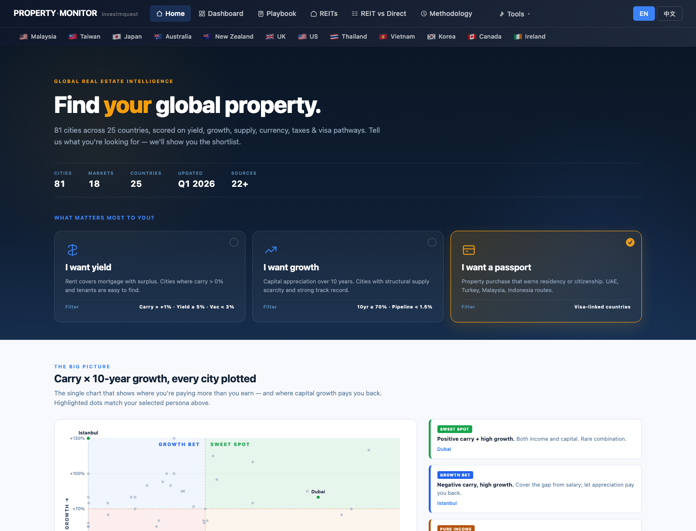
Use the world map — see the EU cluster and note Dublin as the only fully-covered EU city用世界地圖 — 找到歐盟群組，注意都柏林是唯一完整覆蓋的歐盟城市
What they see: dot color depth = how extreme the metric. Dublin stands out for tight vacancy (structural undersupply). The site's EU coverage is concentrated in Ireland — this is a feature to understand before going deeper. 螢幕出現什麼：點顏色深度代表該指標極端度。都柏林在空置率（結構性供不應求）上格外突出。本站的歐盟覆蓋集中在愛爾蘭 — 這是深入研究前需要理解的重點。
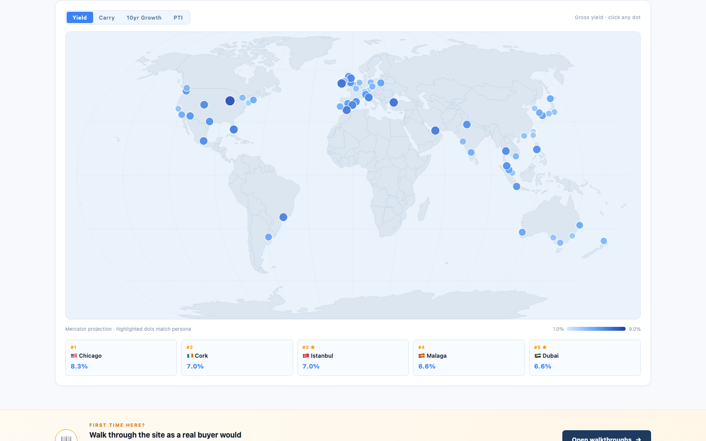
/visa.html — the Golden Visa program comparison hub/visa.html — 黃金簽證計畫比較中心
What they see — the 12-program comparison table columns:
螢幕出現什麼 — 12 個計畫比較表欄位：
Country / Program · Status (Active / Under review / Closed) · Path (Citizenship pill / PR pill) · Min investment · Investment type · Processing time · Family inclusion · Tax key note.
Hero stats: 7 Active programs · 2 Under review · 3 Closed (2023–25) · Lowest threshold $130K · Fastest citizenship Turkey 6mo.
Key findings for the Lius:
▸ Portugal property route: CLOSED (Oct 2023). Funds route still open but not property-linked. NHR ended 2024.
▸ Greece: ACTIVE — €800K Athens/Mykonos; €400K most regions; €250K heritage conversion. 5yr PR, citizenship in 7yr. Short-term rental (Airbnb) now BANNED on GV properties.
▸ Cyprus: ACTIVE PR — €300K new-build, Fast Track 2-4 months. Citizenship path closed (2020). Must visit every 2 years.
▸ Malta: CLOSED (Jul 2025) — EU court struck it down.
▸ Ireland IIP: CLOSED (Feb 2023). No replacement program. The /ie/ data is for market research, not a visa path.
▸ Turkey: ACTIVE Citizenship — $400K, 6-9 months. EU passport? No — Turkey is not in EU. But fastest citizenship path.
Below the table: Tax Red Flags section with 5 warnings: worldwide income tax exposure, exit tax on unrealized gains, real out-of-pocket cost 15-25% above headline, 3-7yr holding period before resale, citizenship vs PR meaningful difference.
國家／計畫 · 狀態（現役／審查中／已關閉）· 路徑（公民晶片 / PR 晶片）· 最低門檻 · 投資類型 · 處理時間 · 家屬納入 · 稅務重點。
Hero 統計：7 個現役 · 2 個審查中 · 3 個 2023–25 關閉 · 最低門檻 $13 萬 · 最快公民土耳其 6 個月。
對劉氏夫婦的關鍵發現：
▸ 葡萄牙房產路徑：已關閉（2023/10）。基金路徑仍開放但非房產相關。NHR 優惠 2024 終止。
▸ 希臘：現役 — 雅典 / 米科諾斯 €80 萬；多數地區 €40 萬；文化資產改建 €25 萬。5 年 PR，7 年申公民。黃金簽證房產現禁止短租（Airbnb）。
▸ 塞普勒斯：現役 PR — €30 萬新建，快軌 2-4 個月。公民路徑 2020 年關閉。每 2 年須訪塞。
▸ 馬爾他：已關閉（2025/7）— 歐洲法院判決違憲。
▸ 愛爾蘭 IIP：已關閉（2023/2）。無替代計畫。/ie/ 數據供市場研究用，非簽證路徑。
▸ 土耳其：現役公民 — $40 萬，6-9 個月。EU 護照？不 — 土耳其非歐盟。但是最快公民路徑。
表格下方：稅務地雷區，含 5 條警告：全球課稅暴露、離境未實現利得稅、實際支出比標題高 15-25%、持有 3-7 年才能賣、公民 vs PR 有實質差別。
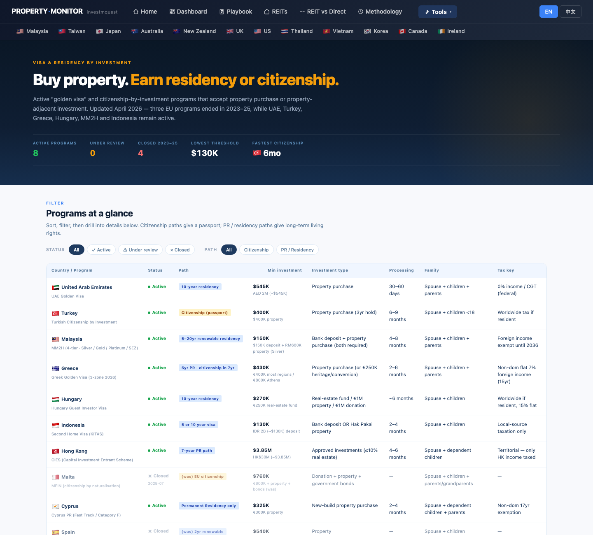
Read the long-form Ireland market report — get the narrative before the charts讀愛爾蘭長篇市場報告 — 看完故事再看圖表
What they see: a long-form analyst report — paragraphs of narrative with stats embedded in the text. A fixed side-nav on the right (on wide screens) lets them jump to sections. This is the only page that connects Ireland's housing crisis, ECB rate cuts, tech-worker demand, and supply bottleneck into one cohesive story. 螢幕出現什麼：長篇分析師報告 — 段落敘述配內嵌統計數字。寬螢幕上右側有固定側欄 nav 可跳章節。這是唯一把愛爾蘭住宅危機、ECB 降息、科技工人需求、供給瓶頸串成一個連貫故事的地方。
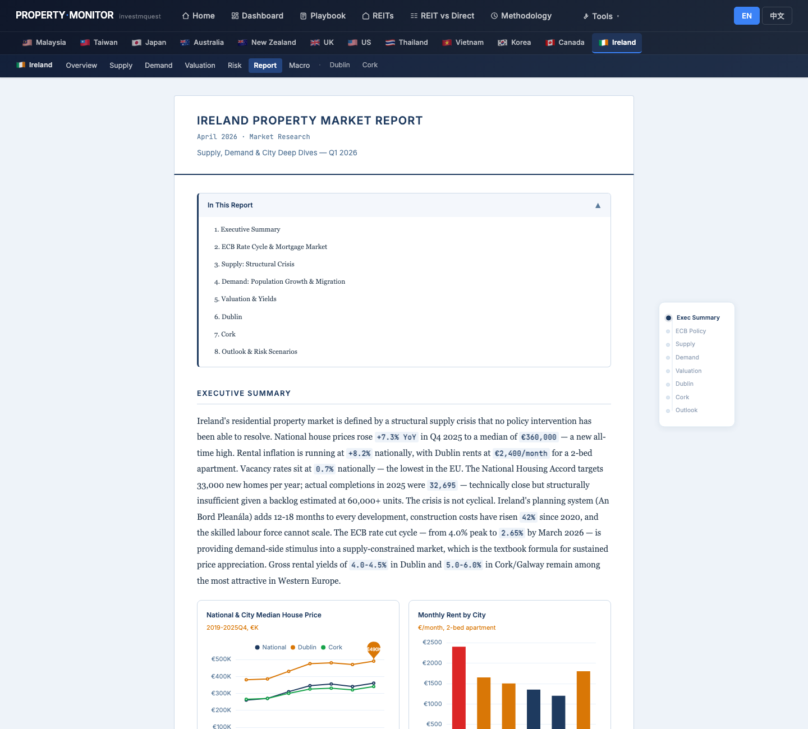
Ireland dashboard — KPI grids tell the structural housing shortage story愛爾蘭儀表板 — KPI 格局說明結構性住宅短缺故事
What they see — 6 KPI cards:
① Median House €360K (+7.3% YoY)
② Median Apartment €285K (+5.8% YoY)
③ Avg Rent €1,800/mo (+8.2% YoY)
④ Vacancy Rate 0.7% (EU's lowest — red badge)
⑤ Annual Completions 32,695 (vs government target 33K)
⑥ Population 5.38M (+1.7% YoY)
4 charts below: National HPI 2015–2025 (near-straight line up) · RTB Rent Index (parallel rise) · Annual Completions vs 33K target · Vacancy Rate by City (Dublin 0.5% — functional zero).
螢幕出現什麼 — 6 張 KPI 卡：
① 房屋中位價 €36 萬（年增 +7.3%）
② 公寓中位價 €28.5 萬（年增 +5.8%）
③ 均租 €1,800/月（年增 +8.2%）
④ 空置率 0.7%（歐盟最低 — 紅標）
⑤ 年完工量 32,695（vs 政府目標 33K）
⑥ 人口 538 萬（年增 +1.7%）
下方 4 張圖：全國 HPI 2015–2025（近直線上漲）· RTB 租金指數（並行上漲）· 年完工量 vs 33K 目標 · 各城市空置率（都柏林 0.5% — 功能性零空置）。
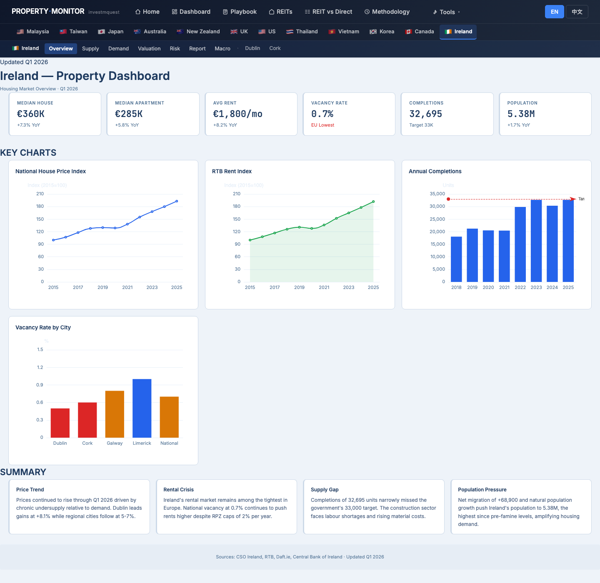
Ireland Macro × Cycle — understand where ECB rate cuts place Ireland in the property cycle愛爾蘭 Macro × Cycle — 了解 ECB 降息把愛爾蘭放在房產週期哪個位置
What they see: the cycle bar maps GFC recovery → Celtic Tiger → crash → COVID freeze → ECB rate hike 2022-2023 → ECB rate cuts 2024-2025 with a NOW marker on the current phase. Context cards show ECB rate (now at cut cycle), population growth, completions vs target, and affordability stress. The macro page explicitly notes that Ireland uses the ECB rate, not the Federal Reserve or Bank of England — which matters because ECB cut earlier and more aggressively than the Fed in 2024. 螢幕出現什麼：週期軸描繪 GFC 復甦 → 凱爾特之虎 → 崩盤 → COVID 凍結 → ECB 升息 2022-2023 → ECB 降息 2024-2025，當下時點有 NOW 標記。脈絡卡顯示 ECB 利率（現在降息週期）、人口增長、完工量 vs 目標、可負擔性壓力。Macro 頁明確說明愛爾蘭使用 ECB 利率，而非聯準會或英格蘭銀行 — 這重要，因為 ECB 2024 年比聯準會更早、更積極降息。
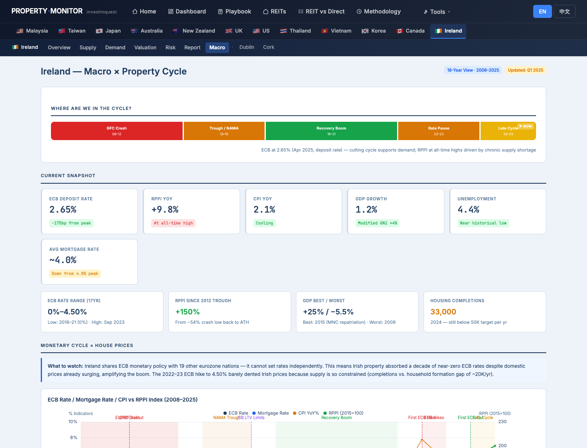
Dublin vs Cork deep-dive — the Lius compare Ireland's two main investment cities都柏林 vs 科克深度分析 — 劉氏夫婦比較愛爾蘭兩大投資城市
What they see side-by-side:
▸ Dublin — Median house €490K (+4.3% YoY), 2-bed rent €2,400/mo (+9.2% YoY), vacancy 0.5% (functional zero), 120K+ tech jobs (Google/Meta/Apple), planning permits −12% YoY (pipeline shrinking). Three zones: D1-D4 Southside (premium, €500K–700K), D6-D8 Inner Suburbs (sweet spot, €380K–480K), D15-D24 North/West (value, €300K–380K).
▸ Cork — Median house €340K (+7.5% YoY, −31% vs Dublin), 2-bed rent €1,650/mo (+7.8% YoY), vacancy 0.6%, population growth +2.1% (exceeds Dublin). Tagged "Ireland's Second City: Best Value Investment Proposition."
Three zones (Dublin page): the page shows D1-D4 Southside, D6-D8 Inner Suburbs, D15-D24 North/West with PSF, yield, and growth context for each.
並排看到什麼：
▸ 都柏林 — 房屋中位價 €49 萬（年增 +4.3%）、兩房均租 €2,400/月（年增 +9.2%）、空置率 0.5%（功能性零空置）、12 萬+ 科技就業（Google / Meta / Apple）、規劃許可 −12% YoY（供給管線收縮）。三個分區：D1-D4 南岸（頂級，€50 萬–70 萬）、D6-D8 內郊（甜蜜點，€38 萬–48 萬）、D15-D24 北部/西部（入門，€30 萬–38 萬）。
▸ 科克 — 房屋中位價 €34 萬（年增 +7.5%，比都柏林低 31%）、兩房均租 €1,650/月（年增 +7.8%）、空置率 0.6%、人口增長 +2.1%（超過都柏林）。標題「愛爾蘭第二大城市：最佳價值投資標的」。
都柏林頁面三個分區：D1-D4 南岸、D6-D8 內郊、D15-D24 北部/西部，各含 PSF、收益率與增值脈絡。
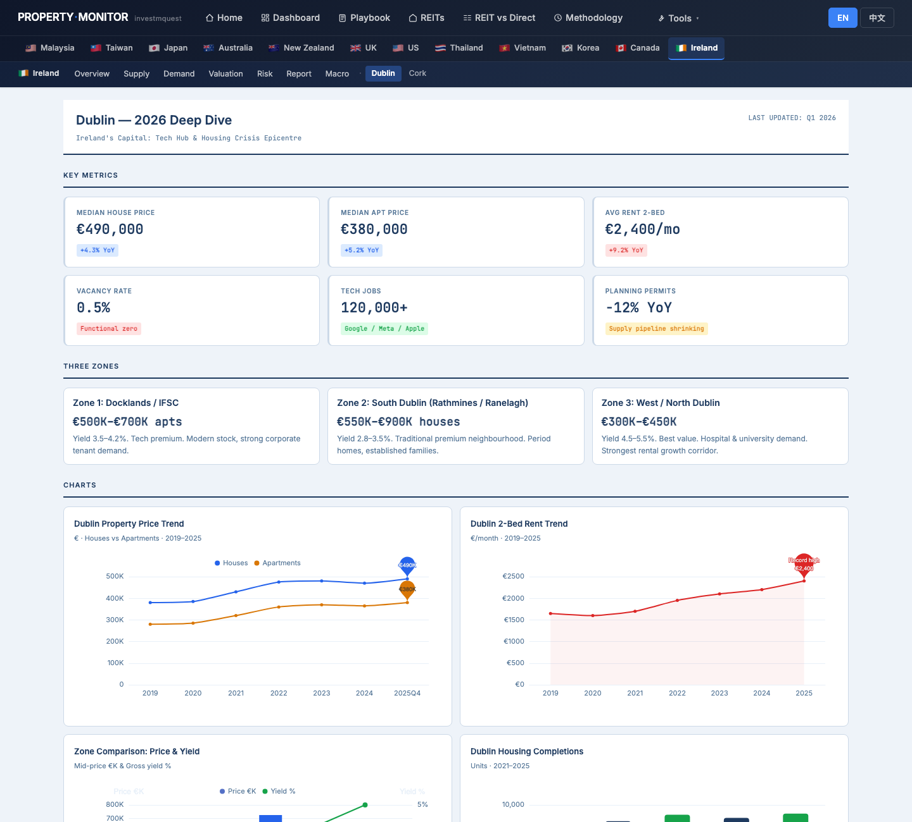
/pipeline-cliff.html — see Dublin and Cork in the 10-quarter delivery calendar/pipeline-cliff.html — 在 10 季交屋日曆上看都柏林與科克
What they see for Dublin and Cork: the quarterly delivery bars show intensity (color-coded by supply pressure). Dublin's note reads: "2025 national completions 36,284 (+20% YoY, highest since CSO series began 2011). Dublin captured 70%+ of apartment completions (9,623 units). Government target 50,500/yr 2025+, scaling to 60,000 by 2030." Cork's note: "South-West region had ~1,000 single-dwelling completions (17% of national singles 2025). Cork tracks Dublin at smaller scale — same NPF target trajectory." Source cited: CSO Ireland. 都柏林和科克的顯示：季度交屋條形圖以顏色顯示供給壓力強度。都柏林說明：「2025 全國完工 36,284（年增 +20%、為 CSO 自 2011 統計起新高）。都柏林佔 70%+ 公寓完工（9,623 戶）。政府目標 2025 起 50,500/年、2030 達 60,000/年。」科克說明：「西南區 2025 獨棟完工約 1,000 戶（佔全國 17%）。科克跟著都柏林軌跡但規模小，同 NPF 目標路徑。」來源標注：愛爾蘭中央統計局。
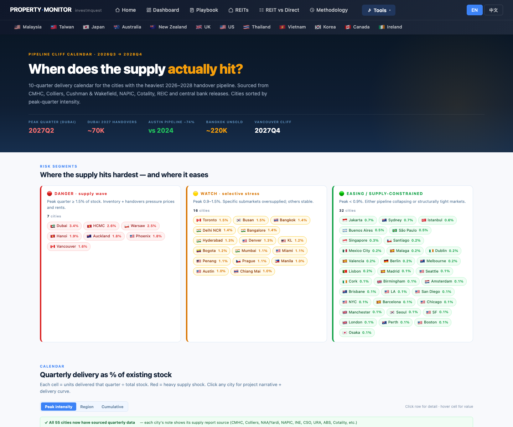
Cost Calculator — what does €1.5M in Ireland actually cost end-to-end as a foreign buyer?Cost Calculator — 外國買家 €150 萬在愛爾蘭的實際全程總成本是多少？
What they see: hero KPIs (TOTAL CASH OUT / NET PROCEEDS AT EXIT / NET P&L verdict) + 5 supporting stats. Three breakdown tables —
① Acquisition — price + stamp duty (Ireland has NO foreign-buyer surcharge — tool notes explicitly: "No foreign-buyer restrictions in Ireland. EU right of movement applies. Non-EU nationals face no extra stamp duty.")
② Holding — LPT (Local Property Tax), maintenance, insurance, optional rental income tax.
③ Exit — agent fee, CGT (33% in Ireland on gains; tool calculates based on assumed appreciation).
Plus stacked bar chart, annual holding-cost line chart, and 12-market comparison table at bottom (IE row highlighted).
Noteworthy for IE: no foreign-buyer stamp duty premium is a major advantage vs Malaysia (8%), Australia (FIRB + state charges), or Singapore (60% ABSD for foreigners).
螢幕出現什麼：頂部 hero KPI（TOTAL CASH OUT / NET PROCEEDS AT EXIT / NET P&L 判決）+ 5 張輔助統計。三張明細表 —
① Acquisition — 物業價 + 印花稅（愛爾蘭沒有外國買家附加 — 工具明確說明：「愛爾蘭無外國買家限制。歐盟移動自由適用。非歐盟國民無額外印花稅。」）
② Holding — LPT（地方財產稅）、維護、保險、可選的租金所得稅。
③ Exit — 仲介費、CGT（愛爾蘭利得稅 33%；工具根據假設增值計算）。
另有堆疊長條圖、年度持有成本折線圖、底部 12 市場比較表（IE 列高亮）。
IE 值得注意：無外國買家印花稅附加是重大優勢，相比馬來西亞（8%）、澳洲（FIRB + 州附加）、新加坡（外國人 60% ABSD）。
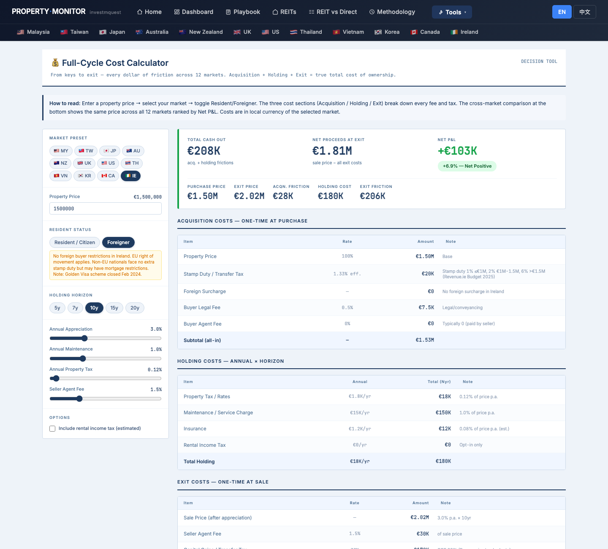
REIT vs Direct — EU row: does buying Ireland property beat EU REITs for a Taiwanese foreign investor?REIT vs Direct — EU 那一列：愛爾蘭房產 vs 歐洲 REIT，台灣外國投資者哪個更好？
What they see: the 7-row comparison table (US/SG/JP/AU/MY/UK/EU). EU row: Direct Income vs REIT Income, Direct Total vs REIT Total, Gap, Winner. Context cards include:
▸ "The Honest 10yr Answer" — Direct property won in all 7 markets, 2015-2025. Widest gap: EU (+6.8pp) where FTSE EPRA Dev Europe REITs had brutal 2022 rate-hike drawdowns (+0.1% total return).
▸ Treaty Relief card for TW: shows TW-EU REIT WHT situation — no TW-EU DTA for most EU REIT distributions means the default EU REIT WHT (25%) applies to Taiwanese residents.
▸ Non-resident rental WHT for EU direct property: 24% (varies by country; Ireland's is more favorable as an EU source jurisdiction).
螢幕出現什麼：7 列比較表（美／新／日／澳／馬／英／歐）。EU 那一列：Direct Income vs REIT Income、Direct Total vs REIT Total、Gap、Winner。脈絡卡包括：
▸ 「10 年真實答案」 — 2015-2025 實體房產 7 個市場全勝。差距最大：歐盟 +6.8pp，因 FTSE EPRA 歐洲 REIT 遭受 2022 升息重創（總報酬僅 +0.1%）。
▸ 台灣協定減免卡：顯示台灣與歐盟 REIT 預扣情況 — 多數歐盟 REIT 分配沒有台灣-EU 租稅協定，意味著對台灣居民適用預設歐盟 REIT 預扣稅（25%）。
▸ 歐盟直接房產的非居民租金預扣：24%（因國而異；愛爾蘭作為歐盟來源地更為有利）。

/carry-heatmap.html — see Dublin and Cork in the carry context vs other EU markets/carry-heatmap.html — 在 carry 脈絡中看都柏林和科克 vs 其他歐盟市場
What they see: Dublin's carry started deeply negative in 2022-2023 (ECB rate hike compressed carry) and is now improving as ECB cuts. Cork shows a similar pattern but starts from higher yield (Cork yield ≈ 7.0% vs Dublin 3.5%), meaning Cork's carry is already positive while Dublin's is turning positive. The city detail card shows current yield / rate stats. The heatmap color scale: dark red = highly negative carry → grey = breakeven → dark green = strongly positive. 螢幕出現什麼：都柏林的 carry 在 2022-2023 年嚴重為負（ECB 升息壓縮 carry），隨著 ECB 降息現在改善中。科克顯示類似模式，但從較高的租金收益率出發（科克 yield ≈ 7.0% vs 都柏林 3.5%），意味著科克的 carry 已轉正，而都柏林的正在轉正中。城市詳細卡顯示當前 yield / 利率統計。熱力圖色階：深紅 = 嚴重負 carry → 灰色 = 盈虧平衡 → 深綠 = 強正 carry。
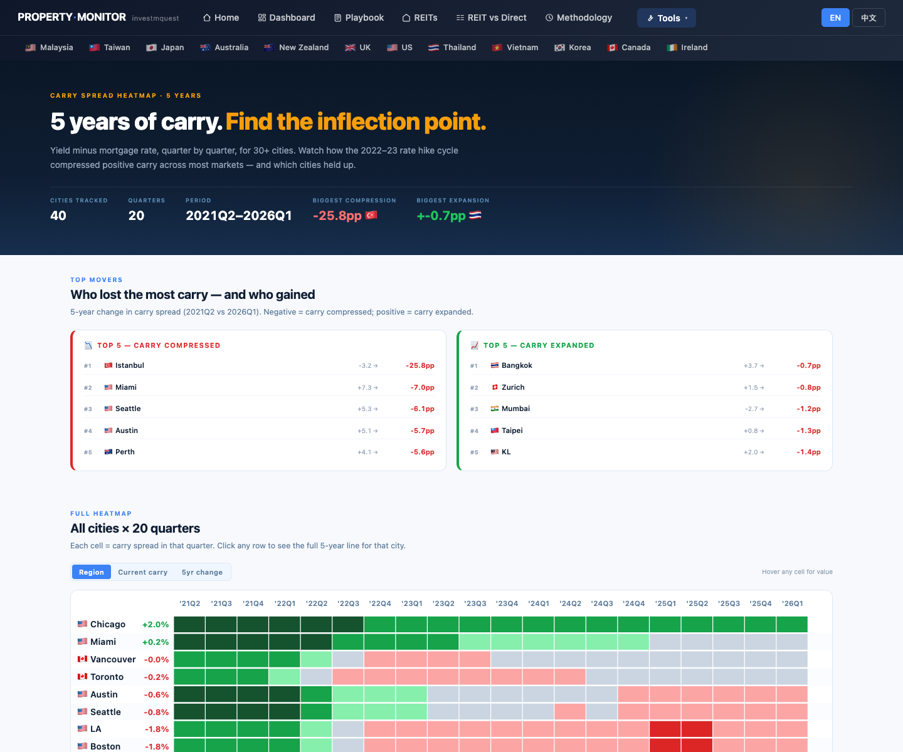
Ireland Risk Monitor + Methodology — verify data sources and read the honest risk picture愛爾蘭 Risk Monitor + Methodology — 驗證資料來源並讀誠實的風險圖像
What they see on Risk — 6 KPI cards:
▸ Planning Backlog: 18 months — judicial reviews add 12-18 months to large projects.
▸ Construction Cost +42% vs 2019 — squeezing viability of new builds (a supply-side negative, landlord-positive).
▸ Tech Layoff Risk: Medium — Ireland's reliance on multinational tech creates concentration risk if big layoffs hit.
▸ RPZ Rent Cap: 2%/yr — Rent Pressure Zone limits 2% annual rent increases; may discourage new rental investment, tightening supply further.
▸ Judicial Review: High Risk — major residential projects delayed by third-party judicial reviews (the "An Bord Pleanála" bottleneck).
Key Risk Factors card: "Housing for All (2021-2030)" plan risks — judicial reviews, construction cost inflation, labour shortages.
On Methodology: Eurozone row in the 20-market table shows sources as CSO, RTB, Daft.ie, Central Bank of Ireland.
Risk 頁出現什麼 — 6 張 KPI 卡：
▸ 規劃積壓：18 個月 — 司法審查為大型項目增加 12-18 個月。
▸ 建造成本 +42% vs 2019 — 壓縮新建可行性（供給側負面，房東正面）。
▸ 科技裁員風險：中等 — 愛爾蘭依賴跨國科技企業，如果大規模裁員衝擊將帶來集中風險。
▸ RPZ 租金上限：2%/年 — 租金壓力區每年租金漲幅上限 2%；可能抑制新租賃投資，進一步緊縮供給。
▸ 司法審查：高風險 — 大型住宅項目被第三方司法審查延遲（「An Bord Pleanála」瓶頸）。
關鍵風險因素卡：「全民住房（2021-2030）」計畫風險 — 司法審查、建造成本通膨、勞動力短缺。
Methodology 頁：20 市場表格中歐元區列顯示來源為 CSO、RTB、Daft.ie、愛爾蘭中央銀行。
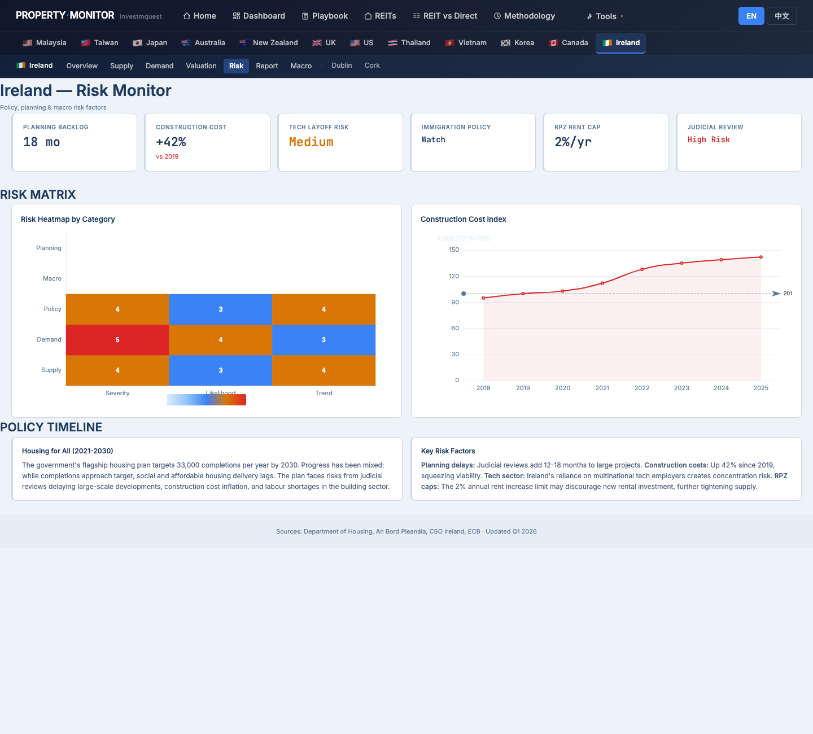
Site cheat sheet — 6 patterns that work on every page網站小抄 — 6 個全站通用規則
These work the same way on every page across all markets — learn once, use everywhere.以下規則每一頁、每個市場都一致 — 學一次，整站通用。
Language toggle語言切換
Top-right of every page: two pill buttons EN / 中文. Choice is remembered across pages and visits via localStorage.每頁右上角：兩顆膠囊鈕 EN / 中文。選擇用 localStorage 跨頁跨次造訪記住。
Tip: switch to 中文 first, then download PDF — the PDF will be in 中文.小技巧：先切到中文再下載 PDF，PDF 就會是中文版。
Market selector — IE is in the navbar市場選擇 — IE 在 navbar 中
Navbar second row: a country flag for each market. Hover 🇮🇪 to see Overview / Supply / Demand / Valuation / Risk / Macro / Report / Dublin / Cork sub-pages. Ireland is the only EU market with this full suite.Navbar 第二列：每個市場一面國旗。游標停在 🇮🇪 上 → 下拉顯示 Overview / Supply / Demand / Valuation / Risk / Macro / Report / 都柏林 / 科克。愛爾蘭是唯一有完整套組的歐盟市場。
For PT / GR / CY / MT: use /visa.html for program-level data, then consult official sources and licensed migration advisers for country-specific property markets.葡萄牙 / 希臘 / 塞普勒斯 / 馬爾他：用 /visa.html 取得計畫層級數據，再向官方來源和持牌移民顧問諮詢各國房產市場。
Tools dropdownTools 下拉選單
All cross-market analytical tools live here: Home, Dashboard, Visa, Playbook, REITs, REIT vs Direct, Carry Heatmap, Pipeline Cliff, Cost Calculator, Methodology.所有跨市場分析工具都在這裡：Home、Dashboard、Visa、Playbook、REITs、REIT vs Direct、Carry Heatmap、Pipeline Cliff、Cost Calculator、Methodology。
The /visa.html page is the starting point for all Golden Visa research — don't skip it./visa.html 是所有黃金簽證研究的起點 — 不要跳過。
KPI card colorsKPI 卡顏色
Left border color tells you the read at a glance.左邊框顏色一眼告訴你判讀。
Visa page filter chipsVisa 頁篩選晶片
/visa.html has two filter bars: STATUS (All / Active / Under review / Closed) and PATH (All / Citizenship / PR-Residency). Use these to quickly isolate the programs still open for new applications./visa.html 有兩條篩選列：狀態（全部 / 現役 / 審查中 / 已關閉）和路徑（全部 / 公民 / PR-居留）。用這些快速篩出仍接受新申請的計畫。
Filtering for "Active" + "Citizenship" shows only Turkey (non-EU) today — all EU citizenship-by-investment paths are closed (Malta) or require 7-10yr residence (Greece, Cyprus).篩「現役」+「公民」今天只顯示土耳其（非歐盟）— 所有歐盟投資換公民路徑已關閉（馬爾他）或需要 7-10 年居住（希臘、塞普勒斯）。
Save any page as PDF for your migration lawyer把任何頁面存成 PDF 給移民律師
Press ⌘ + P (Mac) or Ctrl + P (Windows) → choose "Save as PDF". The print stylesheet hides the navbar so the PDF looks clean. Switch to 中文 first if your lawyer reads Chinese.按 ⌘ + P（Mac）或 Ctrl + P（Windows）→ 選「另存為 PDF」。印刷樣式表自動隱藏 navbar，PDF 版面乾淨。如果您的律師閱讀中文，先切到中文再存。
Most useful pages for your migration lawyer: /visa.html (program comparison) + /ie/ + /ie/dublin + cost calculator printout.對移民律師最有用的頁面：/visa.html（計畫比較）+ /ie/ + /ie/dublin + 成本計算機列印。
What the Lius walk away with — and what they must take outside this site劉氏夫婦帶走什麼 — 以及哪些必須拿到站外去問
After the 12-stop tour, they have a clear separation between "questions the site answered" and "questions the site flagged but cannot answer."走完 12 站後，他們能清楚分開「網站已回答的問題」與「網站幫他們點出但不能回答的問題」。
✓ The site answered these for them✓ 網站已回答的
- Which EU Golden Visa programs are still open — /visa.html: Portugal property closed, Malta terminated, Greece active (€400K+), Cyprus active PR (€300K), Ireland IIP closed哪些歐盟黃金簽證計畫仍開放 — /visa.html：葡萄牙房產路徑關閉、馬爾他終止、希臘現役（€40 萬+）、塞普勒斯現役 PR（€30 萬）、愛爾蘭 IIP 關閉
- The tax red flags to know before committing — 5 explicit warnings on /visa.html: worldwide income exposure, exit tax, real cost 15-25% above headline, holding period before resale, citizenship vs PR difference投資前必知稅務地雷 — /visa.html 上 5 條明確警告：全球收入暴露、離境稅、實際成本比標題高 15-25%、賣前持有期、公民 vs PR 差別
- Which EU country the site has full data on — Ireland: full suite of /ie/ pages including Dublin and Cork city deep-dives網站對哪個歐盟國家有完整數據 — 愛爾蘭：完整 /ie/ 頁面套組，含都柏林和科克城市深度分析
- Ireland's structural fundamentals — 0.5% vacancy in Dublin, structural undersupply, HPI +7.3% YoY, rent +8.2% YoY, ECB cuts improving affordability for tenants愛爾蘭結構基本面 — 都柏林空置率 0.5%、結構性供不應求、HPI 年增 7.3%、租金年增 8.2%、ECB 降息改善租客可負擔性
- Ireland's foreign-buyer transaction cost advantage — no foreign-buyer stamp duty surcharge (same 1-2% as locals), shown on cost calculator vs 12-market comparison table愛爾蘭外國買家交易成本優勢 — 無外國買家印花稅附加（與本地人相同 1-2%），在成本計算機 12 市場比較表上顯示
- Why EU direct property beats EU REITs for a Taiwanese foreign investor — FTSE EPRA EU REIT had +0.1% total 10yr return; direct property +6.8pp ahead (REIT vs Direct, EU row, Foreign + TW mode)台灣外國投資者為何歐盟直接房產勝過歐盟 REIT — FTSE EPRA 歐盟 REIT 10 年總報酬僅 +0.1%；直接房產領先 +6.8pp（REIT vs Direct 歐盟列，Foreign + TW 模式）
- Dublin vs Cork trade-off — Dublin D6-D8 at €380K-480K: tech-worker tenant pool, 0.5% vacancy, carry turning positive 2025-2026. Cork: higher yield (7%), -31% price vs Dublin, positive carry already都柏林 vs 科克取捨 — 都柏林 D6-D8 €38-48 萬：科技工人租客池、0.5% 空置率、carry 2025-2026 年轉正。科克：較高收益率（7%）、比都柏林低 31% 房價、carry 已轉正
- Ireland's key risk factors — RPZ rent cap 2%/yr, tech concentration risk, judicial review supply delays, +42% construction costs (all on /ie/risk)愛爾蘭關鍵風險因素 — RPZ 租金上限 2%/年、科技集中風險、司法審查供給延遲、建造成本 +42%（全在 /ie/risk）
- Where every number comes from — Methodology page: IE sources = CSO, RTB, Daft.ie, Central Bank of Ireland每個數字的來源 — Methodology 頁：IE 來源 = CSO、RTB、Daft.ie、愛爾蘭中央銀行
→ Questions for advisors outside this site→ 必須拿到站外問專業人士的
- Portugal / Greece / Cyprus market-specific data — Lisbon prices, Athens yields, Limassol supply — this site doesn't have city-level data for these markets. Consult local agents + official sources (AIMA, Greek Ministry of Migration, Cyprus Migration Dept)葡萄牙 / 希臘 / 塞普勒斯市場專屬數據 — 里斯本房價、雅典租金收益率、利馬索爾供給 — 本站沒有這些市場的城市層級數據。請諮詢當地仲介 + 官方來源（AIMA、希臘移民部、塞普勒斯移民局）
- Golden Visa application process for Greece or Cyprus — eligible property types, notarization, government approval timeline, family inclusion mechanics → licensed EU immigration lawyer (IAMA accredited)希臘或塞普勒斯黃金簽證申請流程 — 合格房產類型、公證、政府核准時程、家屬納入機制 → 持牌歐盟移民律師（IAMA 認可）
- Taiwan + Ireland (or Greece/Cyprus) dual tax obligations — foreign rental income filing in TW, CGT treaty application, passive income sourcing → Taiwan 會計師 + Irish (or EU) tax adviser台灣 + 愛爾蘭（或希臘 / 塞普勒斯）雙重稅務義務 — 台灣境外租金收入申報、CGT 協定適用、被動收入來源 → 台灣會計師 + 愛爾蘭（或歐盟）稅務顧問
- FX strategy for converting NT$50M → €1.5M entry, hedging EUR/TWD for 10yr hold, rental income euro repatriation → bank FX / treasury desk外匯策略：台幣 5,000 萬 → €150 萬換匯進場、10 年持有期歐元/台幣避險、租金收入歐元匯回 → 銀行外匯 / 財務部門
- Residency physical presence requirement — Greece requires 5-year renewal; Cyprus requires visit every 2 years. Actual compliance tracking and travel planning → migration lawyer + calendar management居留實際到訪要求 — 希臘需 5 年更新；塞普勒斯每 2 年須訪問。實際合規追蹤與旅行規劃 → 移民律師 + 行程管理
- Property management in Ireland for a non-resident landlord — RPZ compliance, PRTB registration, RTB dispute resolution → licensed letting agent (PRSA registered)非居民房東在愛爾蘭的物業管理 — RPZ 合規、PRTB 登記、RTB 糾紛解決 → 持牌出租仲介（PRSA 登記）
- Citizenship naturalization timeline for Greece (7yr) or Cyprus (7yr physical residence) — specific language test, income test, criminal record clearance → specialized EU citizenship law firm希臘（7 年）或塞普勒斯（7 年實際居住）公民歸化時程 — 語言測試、收入測試、犯罪記錄清查 → 歐盟公民身份專業法律事務所
The site's best-supported call for the Lius站上資料能支持的最佳選項 — 給劉氏夫婦
Not a personalized recommendation — a single, opinionated call assembled only from data this site already shows in SECTIONS 01–04.非個人化推薦 — 是從 SECTION 01–04 站上資料推導出的單一明確建議。
✓ Pre-commit checklist (from site data)✓ 進場前 checklist（站上資料能驗證的）
- EU Golden Visa comparison page: Greece's 2026 minimum threshold, residency days requirement, family inclusion rules all confirmed current.EU Golden Visa 對照頁：Greece 2026 最低門檻、居住天數、家屬納入規則 — 全部確認為現行版。
- Athens property valuation: target zone within historical band; resale liquidity confirmed (other visa-buyers in market).Athens 房產估值：目標區段在歷史區間；轉售流動性確認（市場有其他 visa 買家）。
- Pipeline supply for Athens visa-tier zones: not in DANGER (no oversupply that crashes resale).Athens visa 區段供給：不在 DANGER（無打壞轉售的供給過剩）。
- Risk page EU: each shortlisted country's policy stability — programs that could close suddenly are flagged.EU Risk 頁：每個 shortlist 國家的政策穩定度 — 可能突然關閉的方案已 flag。
- Cost Calculator: total program cost (asset + fees + tax + holding cost) clears their value-for-residency hurdle.Cost Calculator：方案總成本（資產 + 費用 + 稅 + 持有）通過「居留價值」門檻。
→ Off-site next steps (the site cannot answer)→ 走出站外的下一步（站上無法回答的）
- EU immigration lawyer (Greece-licensed) — confirm 2026 program terms, family eligibility, renewal pathway, citizenship route (typically 7 years).EU 移民律師（Greece 持照） — 確認 2026 方案條款、家屬資格、續簽路徑、入籍路徑（一般 7 年）。
- Greek-side property lawyer + notary — title, transfer tax, structural compliance, anti-money-laundering documentation.希臘端產權律師 + 公證 — 產權、轉讓稅、結構合規、AML 文件。
- Cross-border tax (TW + Greece) — 全球所得申報、雙重課稅協定（無）、繼承曝險。跨境稅務（TW + Greece） — 全球所得申報、雙重課稅協定（無）、繼承曝險。
- Local property manager + tenant placement — if not self-occupied; visa rules allow rental but management is local-language work.當地物管 + 招租 — 若非自住；visa 規則允許出租，但管理是當地語言工作。
- Currency / banking — EUR account, EU SEPA setup, FX repatriation strategy on eventual exit.外幣 / 銀行 — EUR 帳戶、EU SEPA 設定、最終 exit 時的 FX 匯回策略。
Greece Golden Visa with a €500–800K Athens property is the single call most consistent with the 12 stops in 2026 (Portugal real-estate route closed). The frame is "buying visa, property as the vehicle" — not "buying property, visa as a bonus." Get that order right or the math goes wrong.Greece Golden Visa + €500-800K 雅典房產是 12 站走完後 2026 最一致的選項（Portugal 不動產路徑已關閉）。心態是「買 visa，房產是工具」— 不是「買房，visa 是順便」。順序搞反，數字就錯。